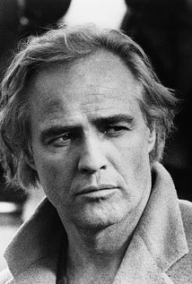
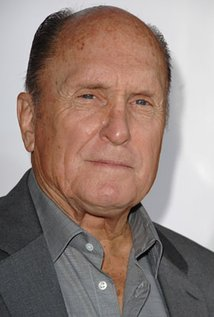
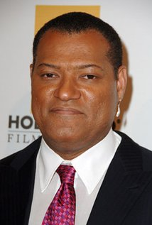
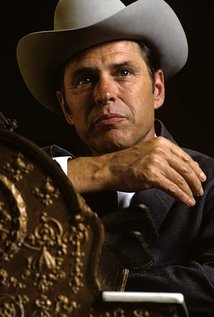

Apocalypse Now
Home
Gallery
Videos
Cast and Crew
User Reviews
Feedback
Cast And Crew
These are the people who were casted in this memorable film about the horrors of war.
Picture
Name

Marlon Brando (Colonel Walter E. Kurtz)
Martin Sheen (Captain Benjamin L. Willard)

Robert Duvall (Lieutenant Colonel Bill Kilgore)
Frederic Forrest (Jay 'Chef' Hicks)
Sam Bottoms (Lance B. Johnson)

Laurence Fishburne (Tyrone 'Clean' Miller)
Albert Hall (Chief Phillips)
Harrison Ford (Colonel Lucas)
Dennis Hopper (Photojournalist)

G.D. Spradlin (General Corman)
Scott Glenn (Lieutenant Richard M. Colby)